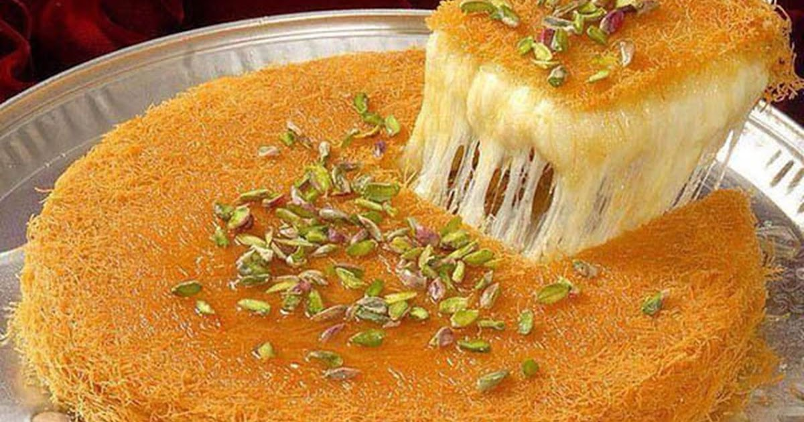

Kunafa(Knafeh)

Kunafa also Knafeh is a crunchy, buttery dessert made with shredded pastry layers enclosing a creamy soft milk pudding.
Drizzled with fragrant simple syrup and adorned with crushed pistachios for a classy look.
INGREDIENTS
For the scented sugar syrup:
- 2 cups (400g) granulated sugar
- 1 cup (230g) water
- Squeeze of lemon
- 2 teaspoons orange blossom water (more or less to taste)
- 1/2 teaspoon rose water (more or less to taste)
For the cheese filling:
- 500g Shelal (or Shellala/Meshalela) cheese (preferably without black sesame)
- 300g Akkawi Tchiki Cheese
For the Knafeh Crust:
- 375g kunafa (aka kataifi dough), fresh or frozen
- 1/3 cup plus 2 tablespoons (94g) melted ghee (or clarified butter *instructions below)
- 3 tablespoons (60g) scented sugar syrup
- 3 tablespoons (45g) water
- 2 tablespoons (30g) ghee or clarified butter, at room temperature, for cooking the knafeh
- Ground pistachios, for garnish (optional)
INSTRUCTIONS
- In a medium saucepan, combine together the sugar, water and squeeze of lemon juice. Set on the stove top over medium high heat. Try to avoid stirring it as it heats to prevent crystallization from happening, but if the sugar is not dissolving, then help it out with a few stirs. Once it comes to a boil, STOP stirring.
- Bring to a boil, then immediately reduce the heat to low and let it simmer for no longer than 10 minutes. Set a timer! The syrup will thicken slightly, and have a consistency similar to warm pancake syrup. If it simmers for longer it could thicken too much and become candy-like and not pourable. Stir in the orange blossom and rose waters.
- Transfer to a medium bowl or gravy boat and allow to cool to room temperature before using.
- Using a sharp knife, thinly slice both the shelal and akkawi cheese. Place each kind of cheese in a separate bowl and cover with lukewarm tap water to remove the saltiness. Allow the cheese to soak for 2 to 6 hours, changing the water every 1/2 hour, until the cheese is no longer salty to the taste. Amount of soaking time will vary depending on the cheese's salt content, which is why they are placed in separate bowl. This step can be done overnight, but in that case, keep the cheese bowls in the refrigerator.
- Drain both cheeses through a colander, squeezing them with your hand or back of a spoon to remove any excess liquid. Crumble both cheeses together with your hands or in food processor to evenly combine. Set aside in the colander to release any excess moisture, as you prepare the knafeh crust (farkeh).
- In a spice grinder, process the kunafa in batches until very finely ground and powdery. It should have the texture of fine bread crumbs. Transfer to a medium bowl and stir in the ghee, 3 tablespoons of scented sugar syrup and water until well combined and homogenous. It will look like cooked couscous and should feel very damp and sticks to itself when squeezed between the palm of your hands.
- ransfer the kunafa mixture to a large skillet set over medium heat. Toast the kunafa mixture, stirring continuously, taking care not to brown it, until it feels dry and sandy and no longer sticks to itself. The color should become one shade darker. While still hot, transfer to a food processor and process to smooth out any lumps, or strain through a large mesh sieve. At this point, the farkeh can be frozen in a zipper lock bag for months.
- Brush a 34cm aluminum or copper pan ONLY with the 2 tablespoons of room temperature ghee. Remove 3 tablespoons of the farkeh and set aside. Evenly sprinkle the remaining farkeh over the bottom of the pan, compressing it with your hand into a compact, even layer that is about 3/4cm thick.
- Spread the cheese mix over the knafeh crust, leaving a 2cm border around the edge uncovered.
- Set the pan over one side of the stove top, making sure the flame is covering only half the pan's bottom. If the pan is centered over the stove top, the center of the knafeh will burn, before the sides get a chance to cook. If using an electric stove, set the heat to medium high; if using a gas stove, set it to medium. Using tongs in one hand and wearing oven mitts in the other, rotate the pan continuously for even baking, patting the cheese with a clean cloth or kitchen towels to absorb any released moisture. Continue rotating the pan until the the very edge of the crust turns deep golden brown and the cheese is mostly melted; 10 to 15 minutes. The edge of the crust is your indicator; whatever color it is, is the actual color of the knafeh's bottom. Remove pan from over the heat.
- Cover the pan and let rest for a few minutes to allow the cheese to melt all the way through. Sprinkle the reserved 3 tablespoons of farkeh over the cheese layer to absorb any excess moisture and to prevent the cheese from sticking to the serving platter.
- Grease serving platter with ghee, then invert the knafeh on it, so that the cheese layer is on the bottom and the crust is on the top. Pour enough cooled scented sugar syrup over the knafeh's surface to cover it, about 3/4 cup. Spread the syrup with a spatula to even out the saturation. Garnish the surface with ground pistachios if desired. Cut into squares and serve right away while still warm and the cheese is still gooey. Dollop with fresh eshta, and drizzle with extra syrup, if desired. If serving later, reheat the knafeh by placing the serving platter over a simmering water bath. The steam from the hot water with remelt the cheese and keep it gooey for a long time. Knafeh is best eaten the same day its made.